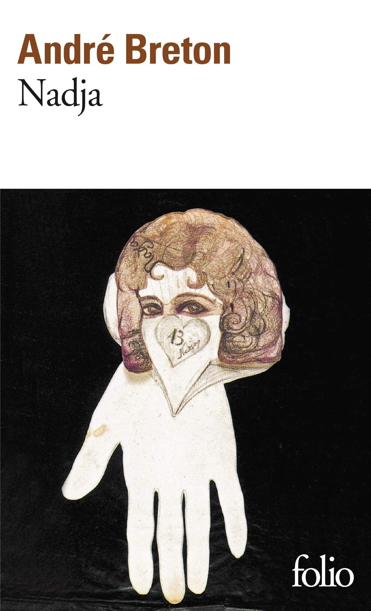
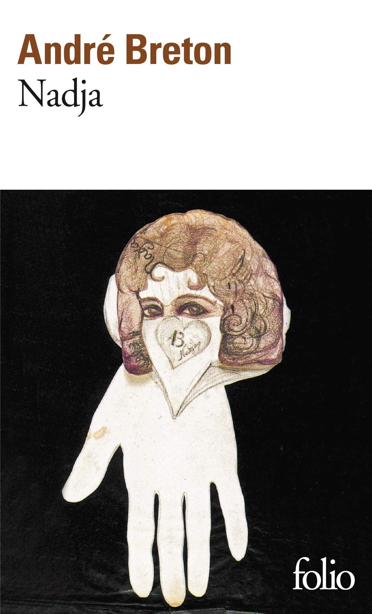

André Breton
André Breton (1896-1966) es considerado el fundador y principal teórico del surrealismo, fue poeta, ensayista y crítico de arte francés. Nació en 1896 en Tinchebray, Francia. Estudio medicina y se especializo en psiquiatra, pero nunca ejerció como médico de forma convencional. Se unió a un grupo de dadaístas en 1916 y en 1924, su creciente compromiso con el surrealismo y su desprecio por Tristan Tzara llevaron a Breton a romper oficialmente con el dadaísmo. Llamado el Papa del surrealismo, escribió el Primer Manifiesto Surrealista, donde definió el movimiento como la expresión del pensamiento sin control de la razón, Breton escribió tratados políticos y filosóficos, poemas y novelas. Entre sus obras más influyentes se encuentran el Manifiesto Surrealista (1924), el relato autobiográfico Nadja (1928) y el ensayo Los vasos comunicantes (1932), que consolidaron su rol como principal teórico del movimiento. Impulsó la escritura automática y buscó liberar el inconsciente a través del arte y la literatura. Escribió el segundo y tercer manifiesto, vivió en Nueva York durante la Segunda Guerra Mundial, se casó tres veces y tuvo una hija, falleció en París en 1966.
"El surrealismo es puro automatismo psíquico por el cual se intenta expresar, verbalmente, por escrito o de cualquier otra manera, el funcionamiento real del pensamiento".
Galería de Obras
 


 ->
->